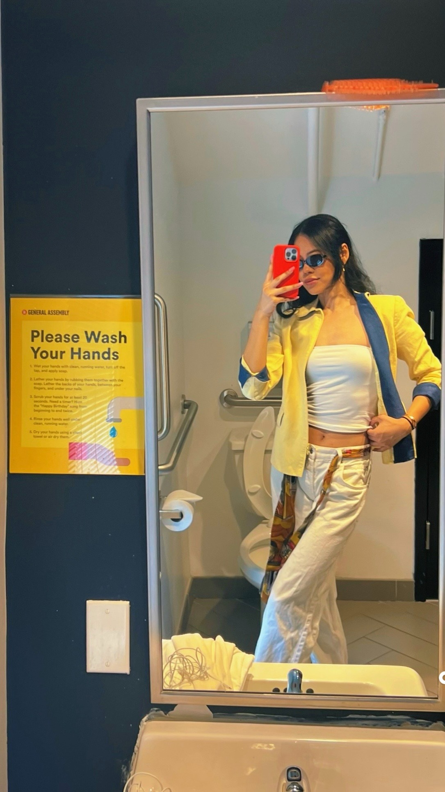

In this week's episode I had a lot going on. I cried at a philanthropy panel in Chicago for wrongful convicts. I deleted my Raya. My soon to be four year old needs a root canal! I had dollar bills stuffed into my walking boot at the strip club at precisely 4 in the morning. I broke things off with a guy that seemed perfect on paper. Let me dig in.
I'm writing this as I wait for my now delayed flight home from Chicago because I impulsively decided to visit Alexa to celebrate her. My friends are finally at the age where they're dropping like flies (to marriage). And I'm here to support and celebrate each and every one of them because it's a beautiful thing seeing your friends happy and healthy. It's so nice being back on the East Coast because it's now a two hour flight instead of 12.
I ate some incredible food, had some incredible slumber in an incredibly comfy king bed with room service in my robe and slippers. I read Thomas Sowell. I forget just how much I love to spend time with myself.


And even with a walking boot, I was still invited up to the DJ booth while out clubbing on Saturday night.
So I must still got it?

I have a busy week ahead of me and I couldn't be more excited to continue building my new place. I've been on a sabbatical for so long I missed how rewarding it is to build tangible things. I'm experimenting with all these new recipes and I wish I had more friends in DC still to throw food parties like I used to, where I made them taste test everything I cooked and rate them.
Every conversation with the German has devolved into him flying me out to Munich and moving into his place. Which is crazy since we haven't even consummated. I just feel empty now. New York was fun, but after we left Aspen I kind of lost that spark while his got stronger. I can't help how I feel so I think I did us both a favor by ending things with him today and instantly felt so much lighter. Perhaps if I slept with him, my feelings for him would be stronger. But I don't want to sleep with someone so that I can like them. I want to sleep with them because I like them. He could offer me the world, he said so himself, but without chemistry, there's no foundation to build on top of.
I spend money on a lot of dumb shit like The Row and Tiffanys but the beauty of my fiscally irresponsible life is that I don't have to justify it to anyone because I'm not spending anyone's money but my own. Because I've done this song and dance before. I've given up my autonomy (and thus my income) for a man who swore to be a provider as long as I moved in with him and became his stay at home girlfriend who dutifully wears matching spandex yoga sets all day, goes to pilates, drink oat milk lattes, have sex at sunset out on the pool and pretty much everywhere else 3x a day, cook dinner and bake him desserts, go shopping, take vacations with him, laugh often and a lot. I loved it. Some of the happiest times in both of our lives. Zero stress. My skin was glowing. Peak sex drive. 10/10 would recommend. Until I got interrogated and yelled at one day for a $200 credit card charge at the spa because he was in a bad mood after a bad investment. I have never felt so small in that moment. I have three degrees. I went to some of the best schools in the nation and could've had my PhD by now from the #1 school in the country if I hadn't chosen motherhood. I have no social media. I don't clout chase. But here I was being treated like a 65 IQ sugar baby who needed pre-authorization for a manicure. I never want to be disrespected that way ever again.
If I've taken anything from this week between the panels, the reading, and everything in between, it's that trade-offs are inevitable, but they're also revealing. What you refuse to give up says more about you than what you're chasing. Reading Thomas Sowell again reminded me that there's a specific kind of clarity in accepting constraints. Markets don't promise you everything, nor should they. But they force you to choose, to prioritize, to optimize, to live with the consequences of your preferences and what you value most.
I think I'm finally getting more honest about mine.

Anyway, I am attending a talk to learn more about impact systems in social sciences. We all have our hobbies.